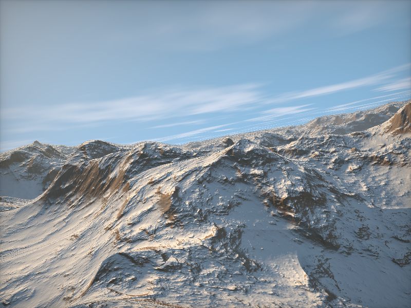

Shadertoy demo. You can copy-paste shader code from an example on www.shadertoy.com and get the demo.
TODO: support cubes and videos as channel inputs (currently, only images are supported).
Note
This example is based on vispy.gloo and thus uses GLSL
shading code, which is executed at the GPU and is
defined as multiline strings.
# NOTE: This example throws warnings about variables not being used;
# this is normal because only some shadertoy examples make use of all
# variables, and the GPU may compile some of them away.
import sys
from datetime import datetime, time
import numpy as np
from vispy import gloo
from vispy import app
vertex = """
#version 120
attribute vec2 position;
void main()
{
gl_Position = vec4(position, 0.0, 1.0);
}
"""
fragment = """
#version 120
uniform vec3 iResolution; // viewport resolution (in pixels)
uniform float iGlobalTime; // shader playback time (in seconds)
uniform vec4 iMouse; // mouse pixel coords
uniform vec4 iDate; // (year, month, day, time in seconds)
uniform float iSampleRate; // sound sample rate (i.e., 44100)
uniform sampler2D iChannel0; // input channel. XX = 2D/Cube
uniform sampler2D iChannel1; // input channel. XX = 2D/Cube
uniform sampler2D iChannel2; // input channel. XX = 2D/Cube
uniform sampler2D iChannel3; // input channel. XX = 2D/Cube
uniform vec3 iChannelResolution[4]; // channel resolution (in pixels)
uniform float iChannelTime[4]; // channel playback time (in sec)
%s
"""
def get_idate():
now = datetime.now()
utcnow = datetime.utcnow()
midnight_utc = datetime.combine(utcnow.date(), time(0))
delta = utcnow - midnight_utc
return (now.year, now.month, now.day, delta.seconds)
def noise(resolution=64, nchannels=1):
# Random texture.
return np.random.randint(low=0, high=256,
size=(resolution, resolution, nchannels)
).astype(np.uint8)
class Canvas(app.Canvas):
def __init__(self, shadertoy=None):
app.Canvas.__init__(self, keys='interactive')
if shadertoy is None:
shadertoy = """
void main(void)
{
vec2 uv = gl_FragCoord.xy / iResolution.xy;
gl_FragColor = vec4(uv,0.5+0.5*sin(iGlobalTime),1.0);
}"""
self.program = gloo.Program(vertex, fragment % shadertoy)
self.program["position"] = [(-1, -1), (-1, 1), (1, 1),
(-1, -1), (1, 1), (1, -1)]
self.program['iMouse'] = 0, 0, 0, 0
self.program['iSampleRate'] = 44100.
for i in range(4):
self.program['iChannelTime[%d]' % i] = 0.
self.activate_zoom()
self._timer = app.Timer('auto', connect=self.on_timer, start=True)
self.show()
def set_channel_input(self, img, i=0):
tex = gloo.Texture2D(img)
tex.interpolation = 'linear'
tex.wrapping = 'repeat'
self.program['iChannel%d' % i] = tex
self.program['iChannelResolution[%d]' % i] = img.shape
def on_draw(self, event):
self.program.draw()
def on_mouse_click(self, event):
# BUG: DOES NOT WORK YET, NO CLICK EVENT IN VISPY FOR NOW...
imouse = event.pos + event.pos
self.program['iMouse'] = imouse
def on_mouse_move(self, event):
if event.is_dragging:
x, y = event.pos
px, py = event.press_event.pos
imouse = (x, self.size[1] - y, px, self.size[1] - py)
self.program['iMouse'] = imouse
def on_timer(self, event):
self.program['iGlobalTime'] = event.elapsed
self.program['iDate'] = get_idate() # used in some shadertoy exs
self.update()
def on_resize(self, event):
self.activate_zoom()
def activate_zoom(self):
gloo.set_viewport(0, 0, *self.physical_size)
self.program['iResolution'] = (self.physical_size[0],
self.physical_size[1], 0.)
# -------------------------------------------------------------------------
# COPY-PASTE SHADERTOY CODE BELOW
# -------------------------------------------------------------------------
SHADERTOY = """
// From: https://www.shadertoy.com/view/MdX3Rr
// Created by inigo quilez - iq/2013
// License Creative Commons Attribution-NonCommercial-ShareAlike 3.0
// Unported License.
//stereo thanks to Croqueteer
//#define STEREO
// value noise, and its analytical derivatives
vec3 noised( in vec2 x )
{
vec2 p = floor(x);
vec2 f = fract(x);
vec2 u = f*f*(3.0-2.0*f);
float a = texture2D(iChannel0,(p+vec2(0.5,0.5))/256.0,-100.0).x;
float b = texture2D(iChannel0,(p+vec2(1.5,0.5))/256.0,-100.0).x;
float c = texture2D(iChannel0,(p+vec2(0.5,1.5))/256.0,-100.0).x;
float d = texture2D(iChannel0,(p+vec2(1.5,1.5))/256.0,-100.0).x;
return vec3(a+(b-a)*u.x+(c-a)*u.y+(a-b-c+d)*u.x*u.y,
6.0*f*(1.0-f)*(vec2(b-a,c-a)+(a-b-c+d)*u.yx));
}
const mat2 m2 = mat2(0.8,-0.6,0.6,0.8);
float terrain( in vec2 x )
{
vec2 p = x*0.003;
float a = 0.0;
float b = 1.0;
vec2 d = vec2(0.0);
for( int i=0; i<6; i++ )
{
vec3 n = noised(p);
d += n.yz;
a += b*n.x/(1.0+dot(d,d));
b *= 0.5;
p = m2*p*2.0;
}
return 140.0*a;
}
float terrain2( in vec2 x )
{
vec2 p = x*0.003;
float a = 0.0;
float b = 1.0;
vec2 d = vec2(0.0);
for( int i=0; i<14; i++ )
{
vec3 n = noised(p);
d += n.yz;
a += b*n.x/(1.0+dot(d,d));
b *= 0.5;
p=m2*p*2.0;
}
return 140.0*a;
}
float terrain3( in vec2 x )
{
vec2 p = x*0.003;
float a = 0.0;
float b = 1.0;
vec2 d = vec2(0.0);
for( int i=0; i<4; i++ )
{
vec3 n = noised(p);
d += n.yz;
a += b*n.x/(1.0+dot(d,d));
b *= 0.5;
p = m2*p*2.0;
}
return 140.0*a;
}
float map( in vec3 p )
{
float h = terrain(p.xz);
return p.y - h;
}
float map2( in vec3 p )
{
float h = terrain2(p.xz);
return p.y - h;
}
float interesct( in vec3 ro, in vec3 rd )
{
float h = 1.0;
float t = 1.0;
for( int i=0; i<120; i++ )
{
if( h<0.01 || t>2000.0 ) break;
t += 0.5*h;
h = map( ro + t*rd );
}
if( t>2000.0 ) t = -1.0;
return t;
}
float sinteresct(in vec3 ro, in vec3 rd )
{
#if 0
// no shadows
return 1.0;
#endif
#if 0
// fake shadows
vec3 nor;
vec3 eps = vec3(20.0,0.0,0.0);
nor.x = terrain3(ro.xz-eps.xy) - terrain3(ro.xz+eps.xy);
nor.y = 1.0*eps.x;
nor.z = terrain3(ro.xz-eps.yx) - terrain3(ro.xz+eps.yx);
nor = normalize(nor);
return clamp( 4.0*dot(nor,rd), 0.0, 1.0 );
#endif
#if 1
// real shadows
float res = 1.0;
float t = 0.0;
for( int j=0; j<48; j++ )
{
vec3 p = ro + t*rd;
float h = map( p );
res = min( res, 16.0*h/t );
t += h;
if( res<0.001 ||p.y>300.0 ) break;
}
return clamp( res, 0.0, 1.0 );
#endif
}
vec3 calcNormal( in vec3 pos, float t )
{
float e = 0.001;
e = 0.001*t;
vec3 eps = vec3(e,0.0,0.0);
vec3 nor;
#if 0
nor.x = map2(pos+eps.xyy) - map2(pos-eps.xyy);
nor.y = map2(pos+eps.yxy) - map2(pos-eps.yxy);
nor.z = map2(pos+eps.yyx) - map2(pos-eps.yyx);
#else
nor.x = terrain2(pos.xz-eps.xy) - terrain2(pos.xz+eps.xy);
nor.y = 2.0*e;
nor.z = terrain2(pos.xz-eps.yx) - terrain2(pos.xz+eps.yx);
#endif
return normalize(nor);
}
vec3 camPath( float time )
{
vec2 p = 1100.0*vec2( cos(0.0+0.23*time), cos(1.5+0.21*time) );
return vec3( p.x, 0.0, p.y );
}
float fbm( vec2 p )
{
float f = 0.0;
f += 0.5000*texture2D( iChannel0, p/256.0 ).x; p = m2*p*2.02;
f += 0.2500*texture2D( iChannel0, p/256.0 ).x; p = m2*p*2.03;
f += 0.1250*texture2D( iChannel0, p/256.0 ).x; p = m2*p*2.01;
f += 0.0625*texture2D( iChannel0, p/256.0 ).x;
return f/0.9375;
}
void main(void)
{
vec2 xy = -1.0 + 2.0*gl_FragCoord.xy / iResolution.xy;
vec2 s = xy*vec2(iResolution.x/iResolution.y,1.0);
#ifdef STEREO
float isCyan = mod(gl_FragCoord.x + mod(gl_FragCoord.y,2.0),2.0);
#endif
float time = iGlobalTime*0.15 + 0.3 + 4.0*iMouse.x/iResolution.x;
vec3 light1 = normalize( vec3(-0.8,0.4,-0.3) );
vec3 ro = camPath( time );
vec3 ta = camPath( time + 3.0 );
ro.y = terrain3( ro.xz ) + 11.0;
ta.y = ro.y - 20.0;
float cr = 0.2*cos(0.1*time);
vec3 cw = normalize(ta-ro);
vec3 cp = vec3(sin(cr), cos(cr),0.0);
vec3 cu = normalize( cross(cw,cp) );
vec3 cv = normalize( cross(cu,cw) );
vec3 rd = normalize( s.x*cu + s.y*cv + 2.0*cw );
#ifdef STEREO
ro += 2.0*cu*isCyan;
#endif
float sundot = clamp(dot(rd,light1),0.0,1.0);
vec3 col;
float t = interesct( ro, rd );
if( t<0.0 )
{
// sky
col = vec3(0.3,.55,0.8)*(1.0-0.8*rd.y);
col += 0.25*vec3(1.0,0.7,0.4)*pow( sundot,5.0 );
col += 0.25*vec3(1.0,0.8,0.6)*pow( sundot,64.0 );
col += 0.2*vec3(1.0,0.8,0.6)*pow( sundot,512.0 );
vec2 sc = ro.xz + rd.xz*(1000.0-ro.y)/rd.y;
col = mix( col, vec3(1.0,0.95,1.0),
0.5*smoothstep(0.5,0.8,fbm(0.0005*sc)) );
}
else
{
// mountains
vec3 pos = ro + t*rd;
vec3 nor = calcNormal( pos, t );
float r = texture2D( iChannel0, 7.0*pos.xz/256.0 ).x;
col = (r*0.25+0.75)*0.9*mix( vec3(0.08,0.05,0.03),
vec3(0.10,0.09,0.08), texture2D(iChannel0,0.00007*vec2(
pos.x,pos.y*48.0)).x );
col = mix( col, 0.20*vec3(0.45,.30,0.15)*(0.50+0.50*r),
smoothstep(0.70,0.9,nor.y) );
col = mix( col, 0.15*vec3(0.30,.30,0.10)*(0.25+0.75*r),
smoothstep(0.95,1.0,nor.y) );
// snow
float h = smoothstep(55.0,80.0,pos.y + 25.0*fbm(0.01*pos.xz) );
float e = smoothstep(1.0-0.5*h,1.0-0.1*h,nor.y);
float o = 0.3 + 0.7*smoothstep(0.0,0.1,nor.x+h*h);
float s = h*e*o;
col = mix( col, 0.29*vec3(0.62,0.65,0.7), smoothstep(
0.1, 0.9, s ) );
// lighting
float amb = clamp(0.5+0.5*nor.y,0.0,1.0);
float dif = clamp( dot( light1, nor ), 0.0, 1.0 );
float bac = clamp( 0.2 + 0.8*dot( normalize(
vec3(-light1.x, 0.0, light1.z ) ), nor ), 0.0, 1.0 );
float sh = 1.0; if( dif>=0.0001 ) sh = sinteresct(
pos+light1*20.0,light1);
vec3 lin = vec3(0.0);
lin += dif*vec3(7.00,5.00,3.00)*vec3( sh, sh*sh*0.5+0.5*sh,
sh*sh*0.8+0.2*sh );
lin += amb*vec3(0.40,0.60,0.80)*1.5;
lin += bac*vec3(0.40,0.50,0.60);
col *= lin;
float fo = 1.0-exp(-0.0005*t);
vec3 fco = 0.55*vec3(0.55,0.65,0.75) + 0.1*vec3(1.0,0.8,0.5)*pow(
sundot, 4.0 );
col = mix( col, fco, fo );
col += 0.3*vec3(1.0,0.8,0.4)*pow( sundot,
8.0 )*(1.0-exp(-0.002*t));
}
col = pow(col,vec3(0.4545));
// vignetting
col *= 0.5 + 0.5*pow( (xy.x+1.0)*(xy.y+1.0)*(xy.x-1.0)*(xy.y-1.0),
0.1 );
#ifdef STEREO
col *= vec3( isCyan, 1.0-isCyan, 1.0-isCyan );
#endif
// col *= smoothstep( 0.0, 2.0, iGlobalTime );
gl_FragColor=vec4(col,1.0);
}
"""
# -------------------------------------------------------------------------
canvas = Canvas(SHADERTOY)
# Input data.
canvas.set_channel_input(noise(resolution=256, nchannels=1), i=0)
if __name__ == '__main__':
canvas.show()
if sys.flags.interactive == 0:
canvas.app.run()